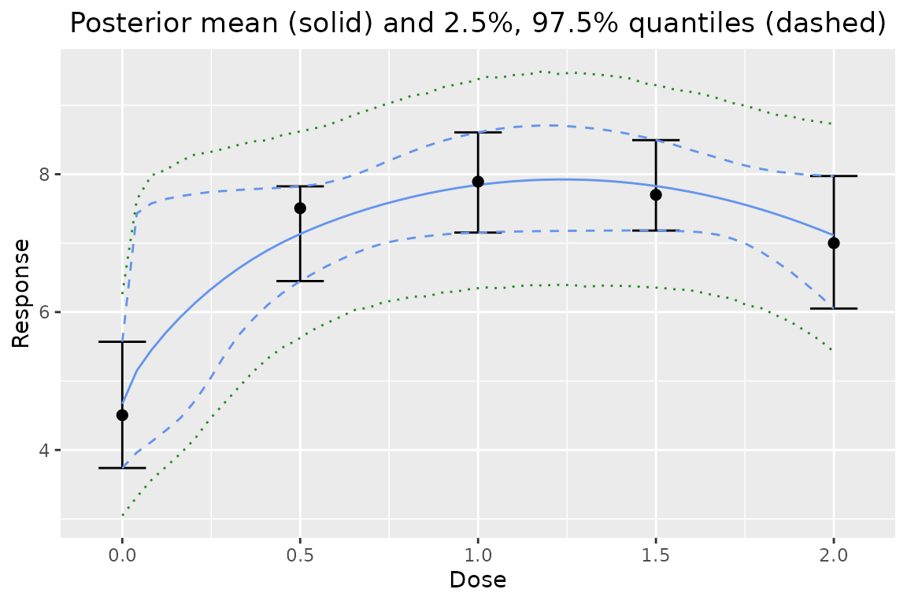
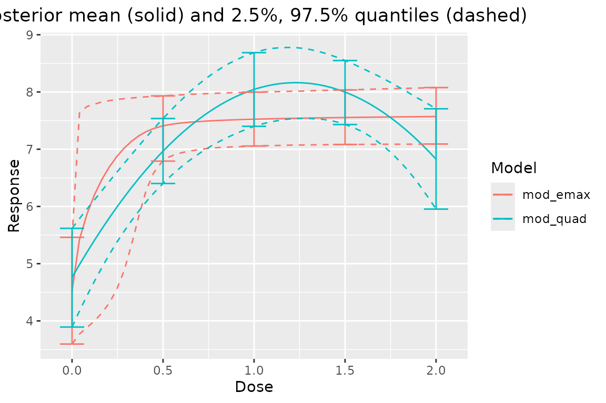
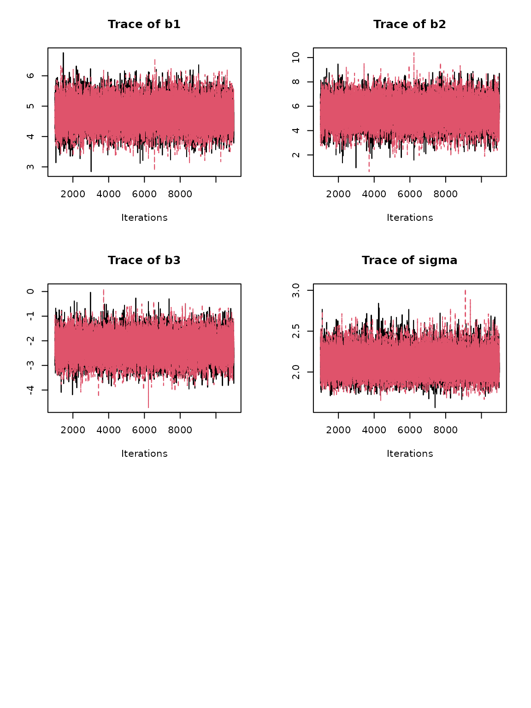
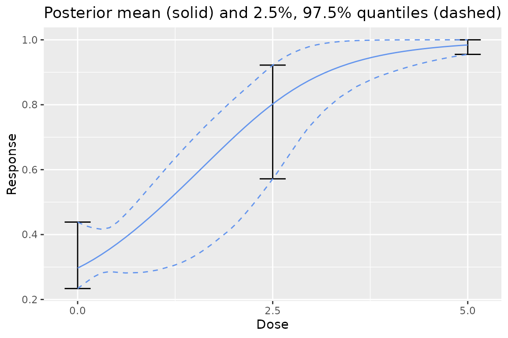

vignettes/dreamer.Rmd
dreamer.RmdThe dreamer R package provides functions to easily perform Bayesian model averaging on (longitudinal) dose-response models. It also provides functions to generate data, and some useful post-processing functions including posterior means and quantiles, plots, and other metrics (e.g. calculating the posterior probability minimum efficacious dose, etc.).
See the “dreamer_method” vignette for a high-level overview of Bayesian model averaging and/or read Gould (2019) for the approach used by dreamer.
We can easily see the possible models to generate data from by typing ?dreamer_data in the console. We will start by generating data from a quadratic model.
library(dreamer)
library(dplyr)
library(ggplot2)
set.seed(888)
data <- dreamer_data_quad(
n_cohorts = c(20, 20, 20, 20, 20), # number of subjects in each cohort
doses = c(0, .5, 1, 1.5, 2), # dose administered to each cohort
b1 = 5, # intercept
b2 = 5,
b3 = - 2,
sigma = 2 # standard deviation
)
head(data)## cohort dose subject response
## 1 1 0 1 1.097313
## 2 1 0 2 1.911268
## 3 1 0 3 6.459665
## 4 1 0 4 4.444836
## 5 1 0 5 1.687431
## 6 1 0 6 4.497953
ggplot(data, aes(dose, response)) + geom_point()Now we can use a Bayesian model averaging technique to analyze the data. We will use a linear and an EMAX model as candidate models, each with prior probability 1 / 2. There are quite a number of candidate dose-response models in dreamer, including linear, quadratic, log-linear, log-quadratic, EMAX, and exponential.
Hyperparameters for each model are set by using the model_XXX() functions. Type ?model for a description of the model constructors and the models each of them fit. The model functions take hyperparameters and put them in a named list:
model_quad(
mu_b1 = 0,
sigma_b1 = 10,
mu_b2 = 0,
sigma_b2 = 10,
mu_b3 = 0,
sigma_b3 = 10,
shape = 1,
rate = .001,
w_prior = 1 / 2
)## -------------
## dreamer Model
## -------------
## type : quadratic
## response: continuous
##
## Dose Response
## |hyperparameter | value|
## |:--------------|-----:|
## |mu_b1 | 0e+00|
## |sigma_b1 | 1e+01|
## |mu_b2 | 0e+00|
## |sigma_b2 | 1e+01|
## |mu_b3 | 0e+00|
## |sigma_b3 | 1e+01|
## |shape | 1e+00|
## |rate | 1e-03|
## |w_prior | 5e-01|The dreamer models are then used in the dreamer_mcmc() function:
# Bayesian model averaging
output <- dreamer_mcmc(
data = data,
n_adapt = 1e3,
n_burn = 1e3,
n_iter = 1e4,
n_chains = 2,
silent = TRUE,
# the argument name "mod_quad" is arbitrary and is chosen by the user
mod_quad = model_quad(
mu_b1 = 0,
sigma_b1 = 10,
mu_b2 = 0,
sigma_b2 = 10,
mu_b3 = 0,
sigma_b3 = 10,
shape = 1,
rate = .001,
w_prior = 1 / 2
),
# the argument name "mod_emax" is arbitrary and is chosen by the user
mod_emax = model_emax(
mu_b1 = 0,
sigma_b1 = 10,
mu_b2 = 0,
sigma_b2 = 10,
mu_b3 = 0,
sigma_b3 = 2,
mu_b4 = 1,
sigma_b4 = 5,
shape = 1,
rate = .001,
w_prior = 1 / 2
)
)The output is a list of the sorted unique doses, unique times (for longitudinal models), the prior and posterior weights for each model, and MCMC output from each individual model. However, the default print method makes it easy to see high-level summaries of the model fit, including the posterior weights for each model:
output## -----------------
## dreamer Model Fit
## -----------------
## doses: 0, 0.5, 1, 1.5, 2
##
## | dose| mean| 2.50%| 97.50%|
## |----:|-----:|-----:|------:|
## | 0.0| 4.668| 3.738| 5.569|
## | 0.5| 7.133| 6.450| 7.824|
## | 1.0| 7.844| 7.154| 8.607|
## | 1.5| 7.828| 7.183| 8.494|
## | 2.0| 7.113| 6.052| 7.974|
##
## |model | prior weight| posterior weight|
## |:--------|------------:|----------------:|
## |mod_quad | 0.5| 0.616|
## |mod_emax | 0.5| 0.384|Output can be easily summarized. The summary() function provides posterior estimates of parameters, Gelman diagnostics, and effective sample sizes for each model and parameter.
summary(output)## $model_weights
## # A tibble: 2 × 3
## model posterior_weight prior_weight
## <chr> <chr> <chr>
## 1 mod_quad 61.6% 50.0%
## 2 mod_emax 38.4% 50.0%
##
## $summary
## # A tibble: 9 × 14
## model param mean sd se se_ts `2.5%` `25%` `50%` `75%` `97.5%`
## <chr> <chr> <dbl> <dbl> <dbl> <dbl> <dbl> <dbl> <dbl> <dbl> <dbl>
## 1 mod_quad b1 4.76 0.441 0.00312 0.00312 3.89 4.47 4.76 5.06 5.62
## 2 mod_quad b2 5.53 1.05 0.00739 0.00745 3.47 4.83 5.54 6.24 7.55
## 3 mod_quad b3 -2.25 0.503 0.00356 0.00358 -3.23 -2.59 -2.25 -1.91 -1.26
## 4 mod_quad sigma 2.11 0.152 0.00107 0.00109 1.84 2.00 2.10 2.20 2.43
## 5 mod_emax b1 4.52 0.475 0.00336 0.00347 3.60 4.20 4.51 4.84 5.46
## 6 mod_emax b2 8.02 1.13 0.00799 0.0688 7.10 7.43 7.63 7.90 11.4
## 7 mod_emax b3 -1.98 1.46 0.0103 0.0556 -4.79 -2.79 -1.94 -1.29 1.77
## 8 mod_emax b4 4.39 3.43 0.0243 0.110 0.0370 1.60 3.90 6.52 12.3
## 9 mod_emax sigma 2.10 0.150 0.00106 0.00107 1.83 1.99 2.09 2.19 2.41
## # … with 3 more variables: gelman_point <dbl>, gelman_upper <dbl>,
## # effective_size <dbl>It is easy to find posterior credible intervals of the mean response for doses of interest:
posterior(output)## $stats
## # A tibble: 5 × 4
## dose mean `2.50%` `97.50%`
## <dbl> <dbl> <dbl> <dbl>
## 1 0 4.67 3.74 5.57
## 2 0.5 7.13 6.45 7.82
## 3 1 7.84 7.15 8.61
## 4 1.5 7.83 7.18 8.49
## 5 2 7.11 6.05 7.97
# posterior Pr(effect of dose - effect of reference dose)
posterior(x = output, reference_dose = 0)## $stats
## # A tibble: 5 × 5
## dose reference_dose mean `2.50%` `97.50%`
## <dbl> <dbl> <dbl> <dbl> <dbl>
## 1 0 0 0 0 0
## 2 0.5 0 2.47 1.47 3.72
## 3 1 0 3.18 2.06 4.32
## 4 1.5 0 3.16 2.05 4.29
## 5 2 0 2.44 1.06 3.87Plot the Bayesian model averaging posterior over the dose range:
plot(output)One can also plot the observed means on top of the plot:
plot(output, data = data)One can also look the dose response relative to a specific dose:
plot(output, reference_dose = 0) # adjust relative to dose = 0The predictive credible intervals for the mean with predictive number of observations can be added easily:
plot(output, data = data, predictive = 10)
One could also look at the predictive distribution of the difference between two sample means from different doses:
plot(output, reference_dose = 0, predictive = 10)One can also plot individual model fits, if desired. Here is the EMAX model’s posterior:
plot(output$mod_emax, data = data)Comparing all the model fits together is easy:
plot_comparison(output)If the plot is too crowded, you can select individual fits:
plot_comparison(
mod_emax = output$mod_emax,
mod_quad = output$mod_quad
)
The posterior probability of meeting a certain effect of interest can be calculated, i.e., Pr(mean response > EOI | data). One can specify custom doses and EOIs relative to another dose, or in absolute terms.
# absolute: pr(mean at dose 0.50 > 1 | data)
pr_eoi(output, eoi = 1, dose = 0.50)## # A tibble: 1 × 3
## eoi dose prob
## <dbl> <dbl> <dbl>
## 1 1 0.5 1
# relative: pr( (mean at dose 0.50) - (mean at dose 0.25) > 0.55 | data )
pr_eoi(output, eoi = 0.55, dose = 0.50, reference_dose = 0.25)## # A tibble: 1 × 4
## eoi dose reference_dose prob
## <dbl> <dbl> <dbl> <dbl>
## 1 0.55 0.5 0.25 0.720
# vectorized
n_doses <- length(output$doses)
pr_eoi(
output,
eoi = rep(.55, n_doses),
dose = output$doses,
reference_dose = rep(0, n_doses)
)## # A tibble: 5 × 4
## eoi dose reference_dose prob
## <dbl> <dbl> <dbl> <dbl>
## 1 0.55 0 0 0
## 2 0.55 0.5 0 1.00
## 3 0.55 1 0 1
## 4 0.55 1.5 0 1
## 5 0.55 2 0 0.997Posterior probabilities of meeting the effect of interest can be calculated for individual models by applying the pr_eoi() function to a specific model’s output:
# from the quadratic model
pr_eoi(
output$mod_quad,
eoi = 1.5,
dose = .75,
reference_dose = 0
)## # A tibble: 1 × 4
## eoi dose reference_dose prob
## <dbl> <dbl> <dbl> <dbl>
## 1 1.5 0.75 0 0.995Calculating the probability each dose is the minimum efficacious dose (as defined as the smallest dose which is above a certain clinically significant difference (CSD)) in the set of doses is performed with the pr_med() function:
pr_med(output, csd = 8)## # A tibble: 5 × 2
## dose prob
## <dbl> <dbl>
## 1 0 0
## 2 0.5 0.0051
## 3 1 0.347
## 4 1.5 0.0506
## 5 2 0.00525
# placebo adjusted
pr_med(
output,
csd = 3,
reference_dose = 0
)## # A tibble: 5 × 3
## dose reference_dose prob
## <dbl> <dbl> <dbl>
## 1 0 0 0
## 2 0.5 0 0.175
## 3 1 0 0.445
## 4 1.5 0 0.0296
## 5 2 0 0.00435
# relative to placebo grp (dose = 0) for just the EMAX model
pr_med(
output$mod_emax,
csd = 3,
reference_dose = 0
)## # A tibble: 5 × 3
## dose reference_dose prob
## <dbl> <dbl> <dbl>
## 1 0 0 0
## 2 0.5 0 0.423
## 3 1 0 0.0849
## 4 1.5 0 0.0217
## 5 2 0 0.0122Calculating the posterior probability each of the specified doses is the smallest dose with at least X% efficacy can be done as follows:
# looking for smallest dose with 95% of the maximum efficacy
pr_medx(output, ed = 95)## # A tibble: 5 × 3
## ed dose prob
## <dbl> <chr> <dbl>
## 1 95 0 0
## 2 95 0.5 0.322
## 3 95 1 0.665
## 4 95 1.5 0.0138
## 5 95 2 0.00015These functions obtain posterior quantiles of the minimum efficacious dose which has X% of maximum efficacy.
post_medx(output, ed = 95)## $stats
## ed pr_edx_exists mean 2.5% 97.5%
## 1 95 1 0.6075771 0.01855687 0.9584038This function provides the posterior quantiles of a dose’s effective dose percent. This is calculated by calculating the dose’s response divided by the maximum response over the range for each iteration of the MCMC.
post_perc_effect(
output,
dose = c(.05, .5)
)## $stats
## # A tibble: 2 × 5
## dose pr_perc_exists mean `2.50%` `97.50%`
## <dbl> <dbl> <dbl> <dbl> <dbl>
## 1 0.05 1 0.660 0.505 0.995
## 2 0.5 1 0.900 0.803 1.00Get diagnostics for each parameter:
diagnostics(output)## # A tibble: 9 × 5
## model param gelman_point gelman_upper effective_size
## <chr> <chr> <dbl> <dbl> <dbl>
## 1 mod_quad b1 1.00 1.00 20000.
## 2 mod_quad b2 1.00 1.00 19706.
## 3 mod_quad b3 1.00 1.00 19685.
## 4 mod_quad sigma 1.00 1.00 19343.
## 5 mod_emax b1 1.00 1.00 18816.
## 6 mod_emax b2 1.02 1.05 267.
## 7 mod_emax b3 1.01 1.02 710.
## 8 mod_emax b4 1.00 1.01 1010.
## 9 mod_emax sigma 1.00 1.00 19754.
# single model
diagnostics(output$mod_emax)## # A tibble: 5 × 4
## param gelman_point gelman_upper effective_size
## <chr> <dbl> <dbl> <dbl>
## 1 b1 1.00 1.00 18816.
## 2 b2 1.02 1.05 267.
## 3 b3 1.01 1.02 710.
## 4 b4 1.00 1.01 1010.
## 5 sigma 1.00 1.00 19754.MCMC traceplots are easy to plot:
# single model
plot_trace(output$mod_quad)
# traceplot for all parameters for each model using: plot_trace(output)To help users choose a prior, the dreamer_plot_prior() function allows the user to see what the prior actually looks like in context of the dose range for a particular model. This is particularly helpful for complex models, or binary models.
dreamer_plot_prior(
doses = c(0, 2.5, 5),
mod_linear_binary = model_linear_binary(
mu_b1 = - 1,
sigma_b1 = .1,
mu_b2 = 1,
sigma_b2 = .1,
link = "logit",
w_prior = 1
)
)Individual prior draws can also be plotted:
dreamer_plot_prior(
doses = seq(from = 0, to = 5, length.out = 50),
n_samples = 100,
plot_draws = TRUE,
mod_quad_binary = model_quad_binary(
mu_b1 = - .5,
sigma_b1 = .2,
mu_b2 = - .5,
sigma_b2 = .2,
mu_b3 = .5,
sigma_b3 = .1,
link = "logit",
w_prior = 1
)
)One can also view the prior for all the models combined in a Bayesian model averaging prior!
dreamer_plot_prior(
doses = c(0, 2.5, 5),
mod_linear_binary = model_linear_binary(
mu_b1 = - 1,
sigma_b1 = .1,
mu_b2 = 1,
sigma_b2 = .1,
link = "logit",
w_prior = .75
),
mod_quad_binary = model_quad_binary(
mu_b1 = - .5,
sigma_b1 = .2,
mu_b2 = - .5,
sigma_b2 = .2,
mu_b3 = .5,
sigma_b3 = .1,
link = "logit",
w_prior = .25
)
)
An independent mean model can also be fit to each of the doses. In this case, because no parametric assumptions are made on the dose-response curve, no Bayesian model averaging is employed and no interpolation is allowed.
output_independent <- dreamer_mcmc(
data = data,
n_adapt = 1e3,
n_burn = 1e3,
n_iter = 1e4,
n_chains = 2,
silent = TRUE, # make rjags be quiet,
# this model has the same prior on the mean for each dose
mod_indep = model_independent(
mu_b1 = 0,
sigma_b1 = 1,
shape = 1,
rate = .001
)
)
# prior is too strong!
plot(output_independent, data = data)
output_independent2 <- dreamer_mcmc(
data = data,
n_adapt = 1e3,
n_burn = 1e3,
n_iter = 1e4,
n_chains = 2,
silent = TRUE, # make rjags be quiet,
# this model has the different priors on the mean for each dose
mod_indep = model_independent(
mu_b1 = c(0, 1, 2, 3, 4),
sigma_b1 = c(10, 10, 20, 20, 30),
shape = 1,
rate = .001,
doses = c(0, 0.5, 1, 1.5, 2)
)
)
plot(output_independent2, data = data)All other functions are also available on independent models as above.
Longitudinal modeling is also available in dreamer. Longitudinal data can be generated by specifying the longitudinal argument, the longitudinal parameters, and the times to observe subjects. See documentation for dreamer::model_longitudinal() and dreamer::model for the parameterization of the longitudinal models.
set.seed(889)
data_long <- dreamer_data_linear(
n_cohorts = c(10, 10, 10, 10), # number of subjects in each cohort
doses = c(.25, .5, .75, 1.5), # dose administered to each cohort
b1 = 0, # intercept
b2 = 2, # slope
sigma = .5, # standard deviation,
longitudinal = "itp",
times = c(0, 12, 24, 52),
t_max = 52, # maximum time
a = .5,
c1 = .1
)
ggplot(data_long, aes(time, response, group = dose, color = factor(dose))) +
geom_point()Fitting the MCMC is the same as before, except priors need to be specified for the longitudinal part of the model:
# Bayesian model averaging
output_long <- dreamer_mcmc(
data = data_long,
n_adapt = 1e3,
n_burn = 1e3,
n_iter = 1e4,
n_chains = 2,
silent = TRUE, # make rjags be quiet,
mod_linear = model_linear(
mu_b1 = 0,
sigma_b1 = 1,
mu_b2 = 0,
sigma_b2 = 1,
shape = 1,
rate = .001,
w_prior = 1 / 2, # prior probability of the model
longitudinal = model_longitudinal_itp(
mu_a = 0,
sigma_a = 1,
a_c1 = 0,
b_c1 = 1,
t_max = 52
)
),
mod_quad = model_quad(
mu_b1 = 0,
sigma_b1 = 1,
mu_b2 = 0,
sigma_b2 = 1,
mu_b3 = 0,
sigma_b3 = 1,
shape = 1,
rate = .001,
w_prior = 1 / 2,
longitudinal = model_longitudinal_linear(
mu_a = 0,
sigma_a = 1,
t_max = 52
)
)
)Plotting longitudinal models is straightforward:
plot(output_long, data = data_long)
# plot dose response at last time point
plot(output_long, times = 52, data = data_long)All the other posterior quantity functions work on longitudinal data. For example:
posterior(output_long)## $stats
## # A tibble: 16 × 5
## dose time mean `2.50%` `97.50%`
## <dbl> <dbl> <dbl> <dbl> <dbl>
## 1 0.25 0 0.516 0.352 0.678
## 2 0.25 12 0.941 0.824 1.06
## 3 0.25 24 1.10 0.951 1.24
## 4 0.25 52 1.18 1.01 1.35
## 5 0.5 0 0.516 0.352 0.678
## 6 0.5 12 1.24 1.13 1.36
## 7 0.5 24 1.51 1.39 1.62
## 8 0.5 52 1.65 1.51 1.80
## 9 0.75 0 0.516 0.352 0.678
## 10 0.75 12 1.54 1.41 1.68
## 11 0.75 24 1.92 1.82 2.02
## 12 0.75 52 2.13 1.98 2.27
## 13 1.5 0 0.516 0.352 0.678
## 14 1.5 12 2.45 2.21 2.70
## 15 1.5 24 3.16 2.96 3.35
## 16 1.5 52 3.54 3.27 3.82